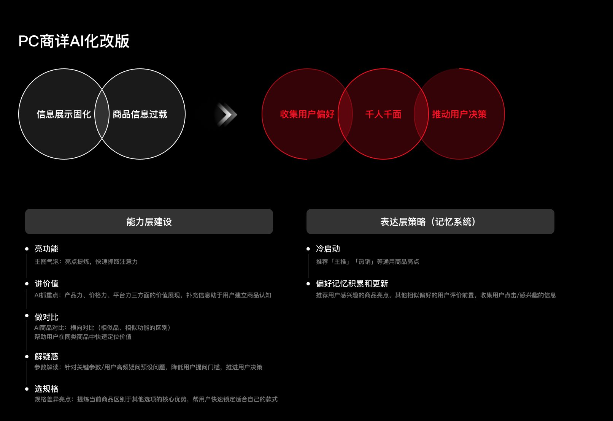
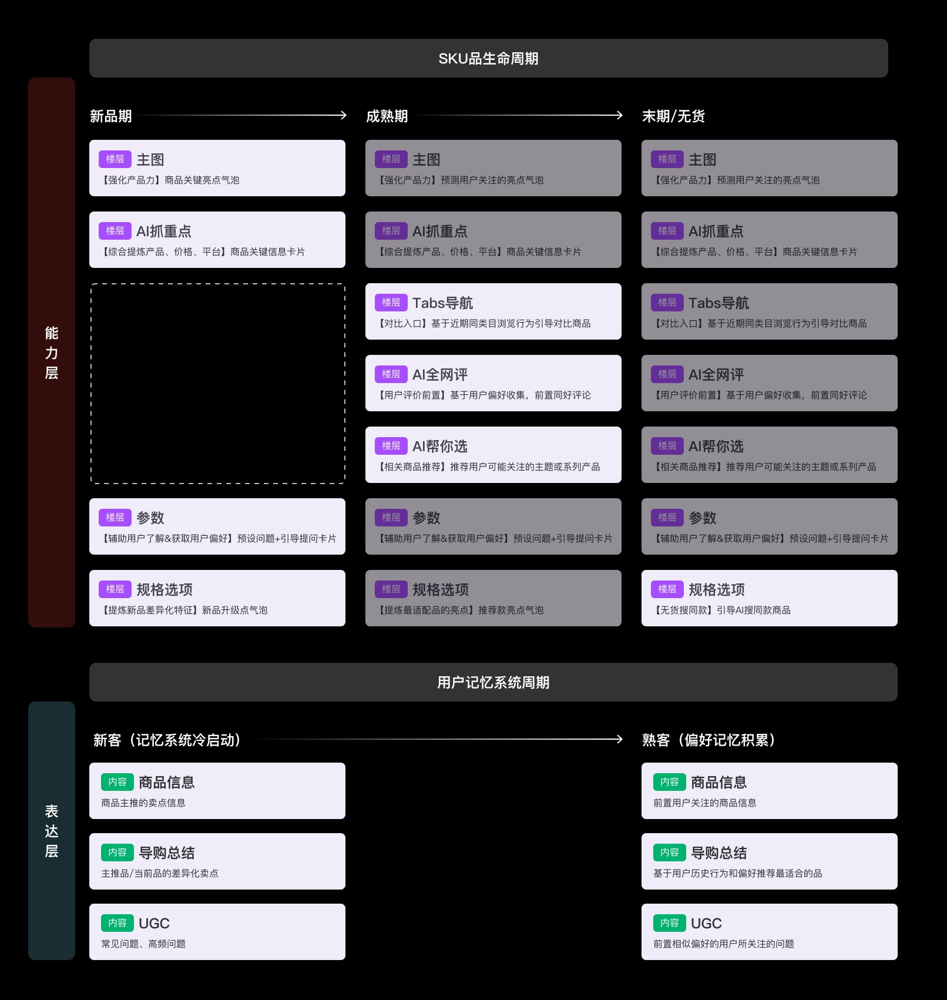
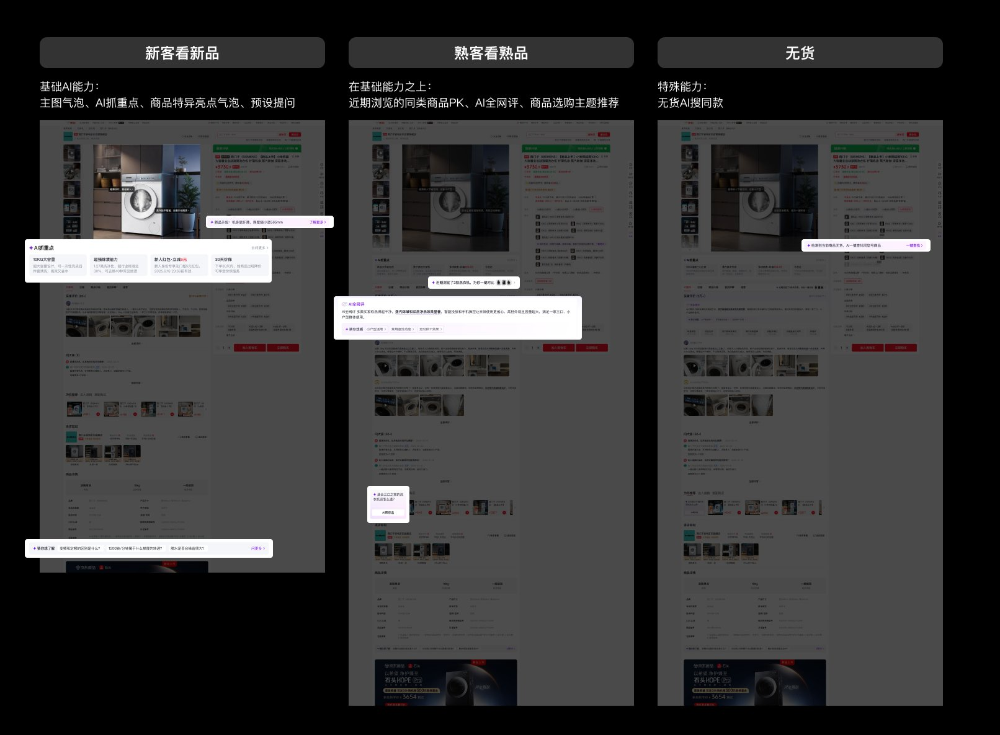
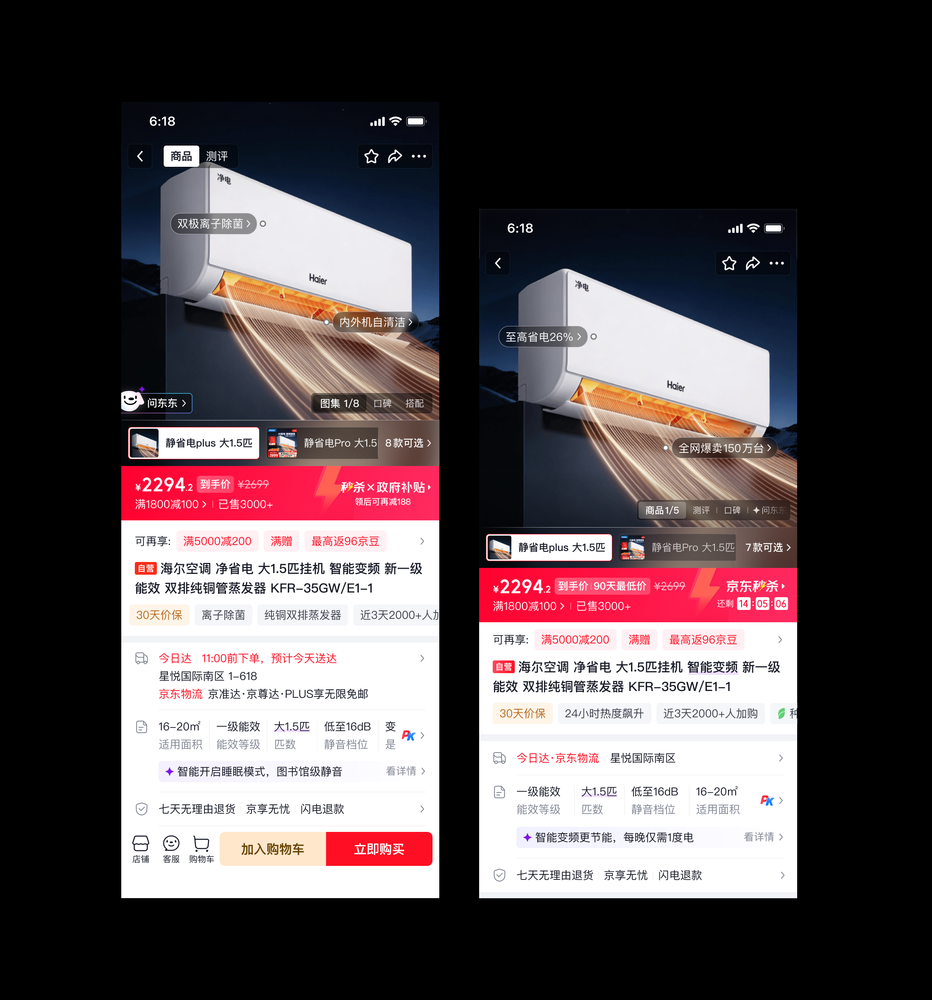

02
背景：传统电商以「人找货」为主，商详页信息固化、千人一面，用户购前需在多页反复搜、反复看、反复比，决策成本高。PC大屏具备承载AI复杂交互的天然优势，可实现差异化突围。
我的核心贡献：① 结合PC大屏特性与用户浏览动线，完成初期各楼层AI能力定位划分；② 立足PC大屏独有特性做定制化AI适配，兼顾跨端体验协同；③ 独立产出PC商详响应式自适应设计规范细则（历史首次）；④ 参与APP AI化项目，设计用户偏好记忆档案在不同数据积累量级下所对应的差异化AI能力展示策略。
PC端设计方案

AI改版核心策略：信息展示固化 + 商品信息过载 → 收集用户偏好 · 千人千面 · 推动用户决策
核心机制：意图收集 × 决策推动迭代闭环
通过用户记忆系统的逐步完善，精准提供信息展示内容和顺序，并在用户决策犹豫的时间节点主动提供导购建议：新客冷启动推荐通用亮点，熟客基于历史行为前置偏好内容，无货场景引导AI搜同款。
设计思路：三步迭代闭环
STEP 01
意图收集
冷启动推荐通用亮点；随交互累积用户偏好记忆，逐步精准化
→
STEP 02
动态信息调整
AI根据用户身份与行为，动态排列楼层内容顺序和信息重点
→
STEP 03
决策推动
在用户犹豫节点主动介入，提供对比、解疑、选规格等导购建议

核心贡献：SKU品生命周期 × 用户记忆系统 双维度AI楼层定位规范（独立产出）

三场景差异化设计：新客看新品（基础AI能力）· 熟客看熟品（叠加个性化）· 无货导流（AI搜同款）
独立产出：响应式自适应规范

独立产出：PC商详响应式自适应设计规范，历史首次——覆盖内容区与Agent区比例关系、左右面板临界值、主图缩放规则，解决AI Agent分屏场景承接问题
APP端设计方案
我的参与APP端由我参与构建个性化导购触点体系，以下为核心落地方案
APP AI化设计方案：主图气泡打标前置核心卖点 · 规格弹层新增AI选款建议 · 东东Agent弹层支持价格走势/商品对比/找相似等能力
